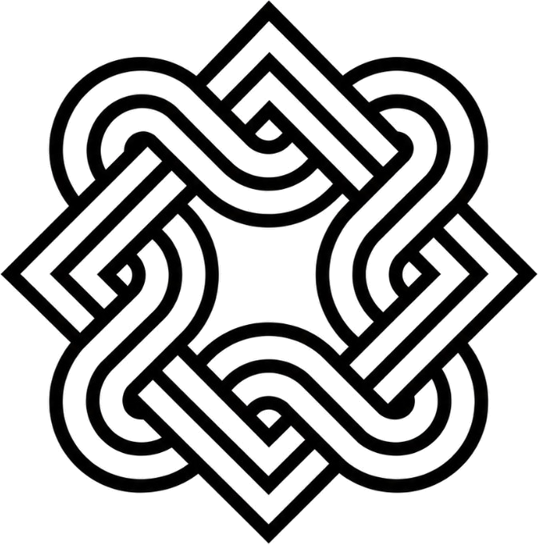

Pod 1
6 strategies · BTC, ES, NQ
Sharpe 1.65 · CAGR 27.4%
Competitions
The AI Chessathon, and Cambridge Battlecode.
Optiver
Top 16 of 465 teams, through to the London final. A Numba chess engine with alpha-beta Negamax and a quantised HalfKP NNUE, fine-tuned with DAgger self-play.
3rd of 195 in the UK · 9th of 831 overall
Qualified for the finals. A fuel-bounded C++ bot, compiled to WebAssembly, combining beam-search farming with imitation learning.

Mosaic Alpha Research
Mosaic Alpha Research is a futures book, and the platform that runs it. I look for a forced flow, someone who has to trade at a known time, and I write the rule down before any test. Each strategy trades one contract on $100,000, with one tick of slippage per fill and $0.95 of commission per round trip. Development data ends on 31 December 2022. A strategy joins a pod only after the gate below, and the holdout from 2023 is opened once.
The platform has a broker connection, a monitoring dashboard, and Telegram alerts. The book further down is paper. Alongside it, a PPO meta-labeller cut maximum drawdown by about 30% and raised Sharpe by about 13%, and an MLP-HMM regime detector showed 3.5× the directional edge across more than a million observations.
Five pods share $500,000 equally, and inside a pod the strategies are equal weight. Figures are as of 21 November 2026.
In sample, through 2022Holdout, from 2023
6 strategies · BTC, ES, NQ
Sharpe 1.65 · CAGR 27.4%
10 strategies · BTC, ES, GC, NQ
Sharpe 1.99 · CAGR 15.2%
9 strategies · BTC, GC, NQ, YM
Sharpe 1.69 · CAGR 9.1%
35 strategies · five markets
Sharpe 1.42 · CAGR 1.1%
16 strategies · BTC, GC, NQ
Sharpe 1.50 · CAGR 1.8%
From 16 to 20 November 2026 the paper book closed 126 trades across 50 strategies for $34,855.90, with 58.7% of those trades winners. No order is sent.
The code is frozen before any of this runs. The checks use data through 31 December 2022, cheapest first, and stop at the first miss. The holdout is opened once, at the end. A rule is not edited after that look.
Net of the tick and the commission, over the development window, and still positive after removing any P&L that came only from holding a position across a contract roll.
Daily-return correlation under 0.95 against the book and against earlier passes from other families. A port of the same rule to another symbol is exempt from that comparison.
Future bars are corrupted, at the entry minute and at random cuts. The trades already taken must not change. The audit has to come back clean.
Each parameter is moved to 0.8× and to 1.2×, one at a time. Every variant has to stay net positive. A rule whose times are fixed by the mechanism, with nothing left to turn, skips this step.
The same trades, with one extra tick of slippage on every fill. Still net positive. A third tick is computed and kept as information. It is not a gate.
The sign of each development trade is shuffled 2,000 times. The real P&L has to beat that null at p < 0.05. Separately, 2,000 bootstrap resamples of the same trades have to finish positive at least 95% of the time.
The same trades keep their side and their holding length and are moved onto 1,000 random sessions. The real timing has to beat that null at p < 0.10. A rule that trades almost every session at one clock time is judged by a shuffle of the minute inside the session, because a session shuffle would leave the clock time in place.
From 1 January 2023: Sharpe above zero, net P&L above zero, and still above zero after the roll adjustment, with at least one trade. The development portion of that full run has to match the development run.
One strategy on each flow, one contract, after costs. Development runs through 2022. The holdout is 1 January 2023 to 13 November 2026, opened once.
Case study · pound future
Managers of pound-hedged UCITS share classes hold US assets and keep a dollar hedge against them. The regulation requires that hedge to stay inside a band, and to be reset the next business day once it leaves the band. Those managers deal into the London 4pm fix. After US equities rise they buy pounds. After equities fall they sell pounds.
Lookahead clean. Roll P&L $0. Extra-tick slippage, the Monte Carlo and the random-timing null all passed. Sixteen holdout trades. Measured 16 November 2026.
Case study · pound future
Leveraged funds in the pound future have to cut risk when equities fall, and the dealers on the other side unwind the hedges they were carrying against those funds. That unwind pushes the pound, and the push fades over the following days. The strategy takes the other side of the unwind.
Lookahead clean. Roll P&L was −$588 in development and −$19 in the holdout. Extra-tick slippage, the Monte Carlo and the random-timing null all passed. Measured 16 November 2026.
Case study · euro future
Treasury coupon auctions announce the supply in advance, so the price at the close is a surprise in demand. The arbitrageurs who absorb that demand hold Treasuries and currencies together, and the dollar moves with them over the following sessions. More demand for Treasuries goes with a weaker dollar, so the euro rises. Less demand, and the euro falls.
Of the development net, $7,209 came from holding across contract rolls, leaving $90,191. Of the holdout net, $3,872 came from rolls, leaving $8,403. Lookahead clean. Extra-tick slippage, the Monte Carlo and the random-timing null all passed. Measured 16 November 2026.
Case study · Sakuraba
Japanese importers settle dollar invoices on gotobi dates, the 5th, 10th, 15th, 20th, 25th and 30th. Their banks buy dollars into the 09:55 JST Tokyo fix, so USD/JPY is pushed up into the fix. Sakuraba is the strategy on that flow, one yen future. The charts are the checks it cleared.
Nets are after costs. Every parameter, taken to 0.8× and to 1.2×, stayed net positive. Measured 15 November 2026.
Development, 2010–2022Holdout, from 2023
Quantitative research · London
I work on AI for systematic trading. The research is deep reinforcement learning for building portfolios and for deciding which signals to take, and the standard around it: no lookahead, costs on every fill, and a result that still holds on data it was not fit on.
Mosaic Alpha Research is the futures book I built for that standard. A rule is written down before it is tested. It pays one tick of slippage and $0.95 of commission. It joins a pod only after a fixed gate, and the holdout from 2023 is opened once.
Four forced flows from the futures book. Holdout is 2023 to 13 November 2026. Development is through 2022. Both Sharpes are after costs.
Pound-hedged funds must reset a dollar hedge the day after it leaves the regulatory band. They deal into the London fix.
When equities fall, leveraged funds cut pound exposure and their dealers unwind with them. The dislocation fades afterwards.
A surprise in auction demand is absorbed by arbitrageurs who hold Treasuries and currencies together. The euro moves with that demand.
Japanese importers settle on fixed dates. Their banks buy dollars into the 09:55 Tokyo fix, so USD/JPY is pushed up into it.
Prediction markets · Python
Advising a confidential client on whether systematic prediction-market trading is feasible: broker infrastructure, APIs, market structure, data, and what can actually be executed.
Built an execution-aware paper-trading engine with fees, one second of latency, a cap at half the displayed depth, and position limits. A simulated $10,000 book grew to multiple six figures. The current work is the move from that paper book toward live trading.
PredictNow.AI · Python
With Ernest Chan, a PPO portfolio optimiser pre-trained by imitation learning. On its own it reached a Sharpe of 0.8 against 0.69 for the S&P 500. Paired with a hidden Markov regime model, the Sharpe was about 0.98. The window is 2014 to mid-2025.
Latent market representations and historical state retrieval, for naming a regime and for a better representation of the feature set.
A futures book of pre-registered rules, and the platform around it. A strategy pays its costs, then has to clear a fixed gate and one sealed holdout before it joins a pod.
A reinforcement-learning filter on a tail-risk strategy. It decides whether to take each signal. Maximum drawdown fell by about 30%, and Sharpe rose by about 13%.
Top 16 of 465 teams, through to the London final. A Numba chess engine with alpha-beta Negamax and a quantised HalfKP NNUE, fine-tuned with DAgger self-play.
Conformal prediction inside a deep-RL trajectory reward. The safety radius tightened by 0.6% on average at 95% coverage. A variance smoother cut minADE@20 by 6.7%.
A PyTorch harness for CNNs and language models: fine-tuned GPT-2 and compared accuracy, inference latency, and energy.
MEng Robotics & Artificial Intelligence, predicted first. Machine learning, reinforcement learning, deep learning, data analysis, data structures, and modelling.
Sep 2017 – Jun 2022 · BuckinghamAcademic scholar and senior prefect. A-levels: Mathematics A*, Further Mathematics A*, Chemistry A*, Biology A.
Reinforcement learning, algorithmic trading, imitation learning, time series, portfolio optimisation, regime detection, conformal prediction, prediction markets.
Python, NumPy, pandas, PyTorch, scikit-learn, Stable-Baselines3, Gymnasium, Ray, C, MATLAB, Git, Docker, LangChain, LangGraph.